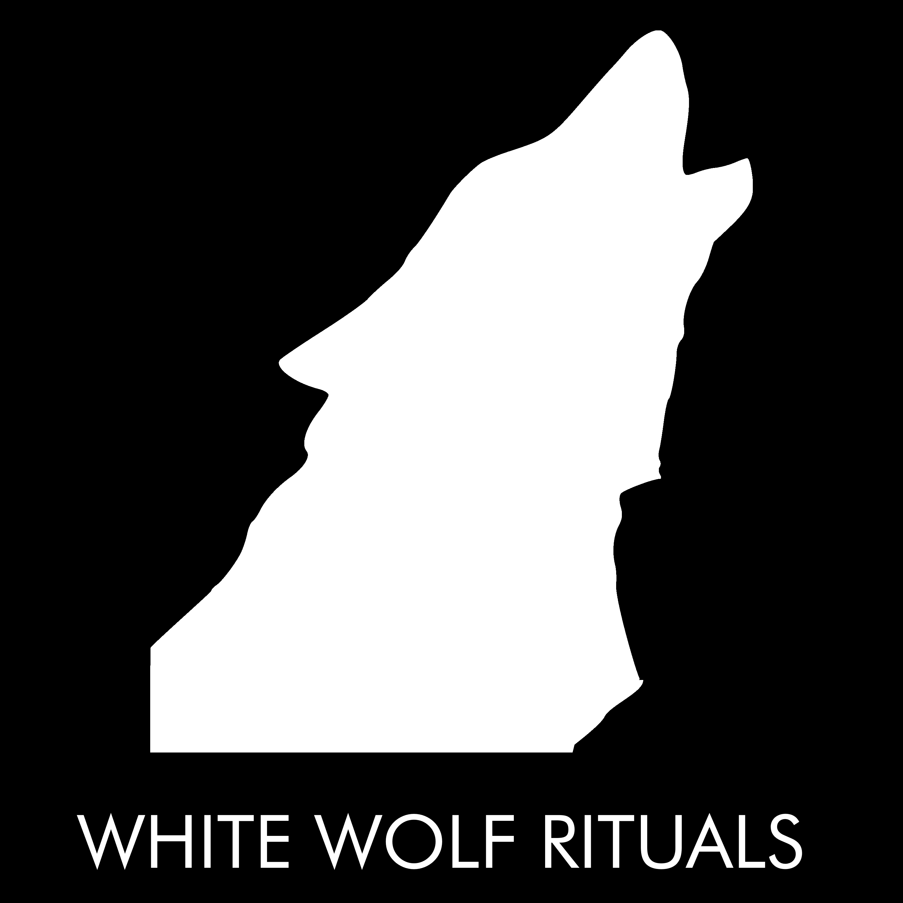

Kraft und Klarheit
Worauf fokussierst du dich den Rest dieses Jahres? Finde Kraft und Klarheit.
Das Jahr ist noch nicht vorbei, aber das Ende kommt allmählig näher. In diesem Ritual wirst du Klarheit gewinnen darüber, welche Projekte du in diesem Jahr fertig stellen wirst, und welche Projekte du ins nächste Jahr mitnehmen wirst.
Dein Benefit: Kraft, Klarheit und Lebensfreude!

Was machen wir?
- Wir wandern über den Törlweg die Rax hinauf. Das ist eine anspruchsvolle Wanderung, die dir hilft, aus den Kopf und in deinen Körper zu gehen.
- In verschiedenen Phasen machen wir uns bewusst, wie es mit den Projekten in unserem Leben ausschaut.
- Auf dem Rax-Plateau machen wir ein Ritual, wo das Bewusstsein das wir beim Wandern erreicht haben, in unserem ganzen Wesen gespeichert wird.
- Wir essen gemeinsam Mittagessen auf der Wiese.
- Wir fahren gemütlich mit der Rax Seilbahn wieder hinunter.
- Um die neugewonnene Klarheit zu testen und zu stärken, gehen wir als Gruppe in die Schwarza (der kalter Fluss bei der Talstation)
Melde dich jetzt per E-Mail an: dirk@white-wolf-rituals.com
Was brauchst du?
- Bringe für jedes Projekt woran du in 2020 gearbeitet hast oder dir vorgenommen hast, einen Gegenstand mit. Das kann eine Schraube, eine Büroklammer, ein USB-Stick, ein Stein, eine Perle, … sein. Wichtig ist, dass der Gegenstand für dich einen Bezug zu dem Projekt hat. Bringe für jedes Projekt einen eigenen Gegenstand mit.
- Festes Schuhwerk. Ich empfehle Wanderschuhe.
- Eine gute körperliche Verfassung.
- Ausreichend Trinkwasser.
- Sonnenschutz.
- Bequeme Bekleidung.
- Mittagessen für dich, eventuell auch ein Bisschen zum Teilen mit den anderen. Kostproben aus deiner Heimatregion sind beliebt!
- Badeschlapfen, Badebekleidung und ein Handtuch.
Deine investition: 99 EUR
Melde dich jetzt per E-Mail an: dirk@white-wolf-rituals.com
Wann und wo genau?
- Sonntag 20. September
- Hirschwang an der Rax, bei der Rax Seilbahn
- Wir treffen uns um 9:00 am Parkplatz vor den Treppen zur Rax Seilbahn
- Wir verabschieden uns spätestens um 17h, rechtzeitig für den letzten Bus nach Payerbach/Reichenau
Melde dich jetzt per E-Mail an: dirk@white-wolf-rituals.com
Anfahrt
Mit dem Auto
- Die Adresse der Rax-Seilbahn ist Dr. Ewald Bing-Straße 3, 2651 Reichenau a. d. Rax.
- Google Maps kennt diese Adresse nicht unbedingt. Suche ggf. „Rax Seilbahn“
- Wenn du in der Nähe von Gloggnitz die Schnellstraße S6 verlässt, kommen bald Schilder Richtung Seilbahn.
Öffentlich
- Von Wien fährt Regional Express 1979 (Richtung Mürzzuschlag Bahnhof) um 07:18 von Wien Hauptbahnhof weg, und kommt um 08:27 in Payerbach/Reichenau an.
- Bus 341 (Richtung Schwarzau im Gebirge Ortsmitte) fährt um 8:33 von Bahnhof Payerbach/Reichenau, und kommt 8:44 bei der Seilbahn an.
Anmeldung
Schicke ein E-Mail an : dirk@white-wolf-rituals.com
Das Kleingedrückte
Die Teilnahme erfolgt auf eigener Gefahr. Es werden Fotos und Videos gemacht, die für Werbezwecke veröfftentlich werden können. Mit deiner Teilnahme zeigst du, dass du damit einverstanden bist.